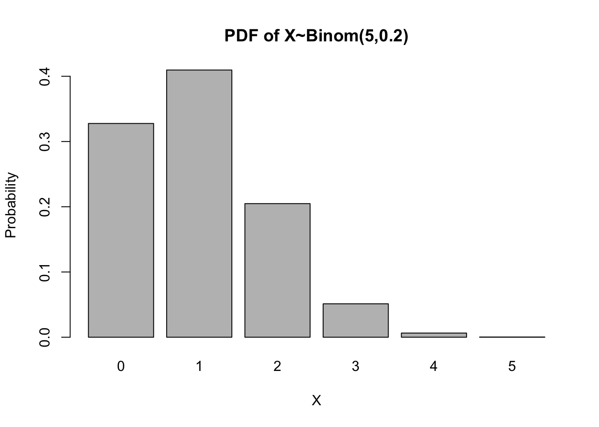
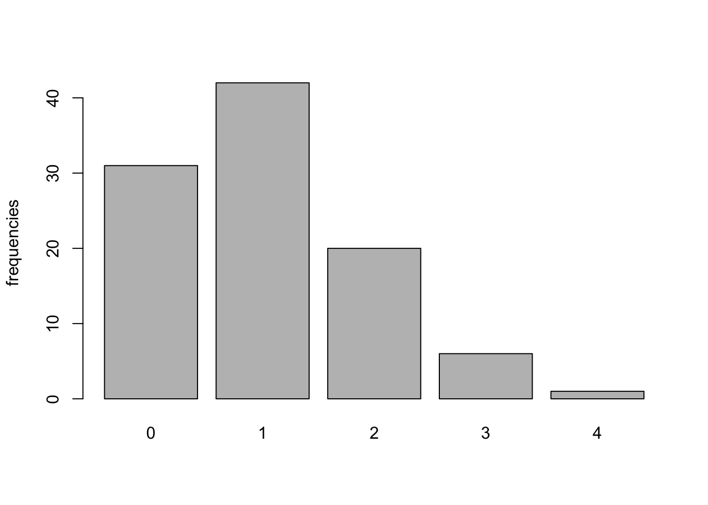
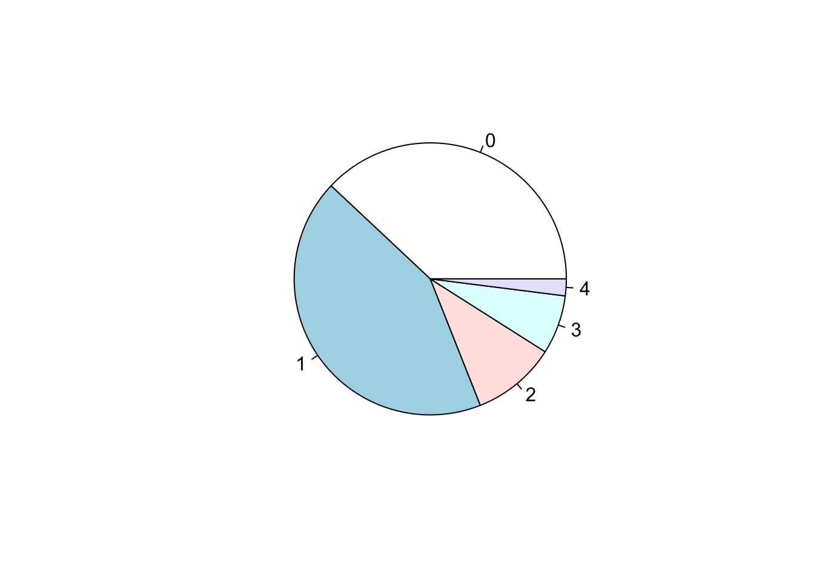
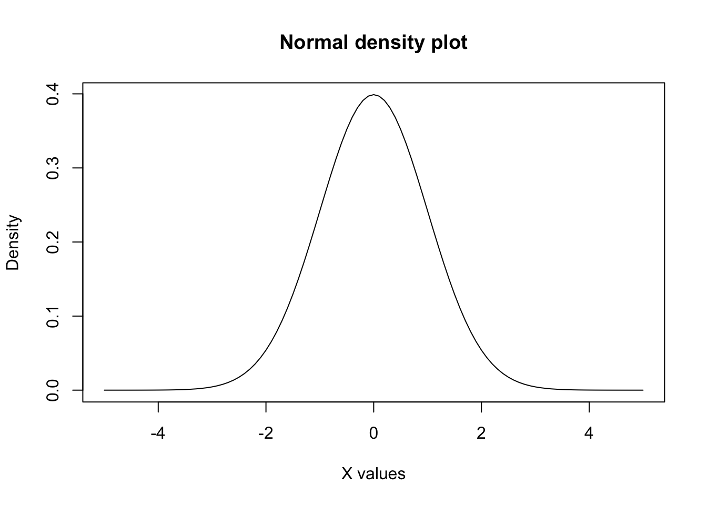

In this R lab, we will practice with probability distributions.
Binomial distribution
A random variable \(X\) is said to be a binomial variable with parameters \(n\) and \(p\) if
\[ P(X=x) = \binom n x p^{x}(1-p)^{n-x}\]
This is often writen \(X \sim \text{Binom}(n,p)\). Let us compute the probabilities of a binomial distribution \(X \sim \text{Binom}(5,0.2)\) using R.
# first, we store the parameters of the distribution in variables n and pn =5p =0.2x =0:n # we create a vector with discrete values from 0 to nbinom_coef=choose(n, x) # we compute the binomial coefficients for each x # we compute binomial probabilities for all x valuesbinom_prob= binom_coef* p^x * (1- p)^{n-x} print(binom_prob) # we print all probabilities
This was a good exercise, but R has a built-in function to compute the probabilities of a binomial distribution directly: dbinom(x,n,p). Let us use that function to verify that the probabilities that we computed were correct.
We can plot those probabilities with the barplot command to see the probability density function (PDF).
barplot(names= x,height = binom_prob,main ="PDF of X~Binom(5,0.5)",xlab='X',ylab='Probability')

Simulations of a binomial distribution
Next we will simulate N occurrence from a binomial distribution with the command rbinom(N, n, p) and look at the frequency distribution of the outcomes.
N=100# we draw N samples from a binomial distribution with parameters n and p and store them in variable binom_simbinom_sim =rbinom(N,n,p)# we compute the frequency distribution of the samples and store them in variable datadata =table(binom_sim)print(data)
binom_sim
0 1 2 3 4
30 38 25 6 1
# we can plot the frequencies in a bar plotbarplot(data,ylab="frequencies")

# we can plot the frequencies in a pie chartpie(data)

Next, we will compute the relative frequencies by dividing the observed frequencies by the total number of draws N. For high N, the relative frequencies should approach the theoretical probabilities of the binomial distribution.
We can define and plot this function in R to see the characteristic bell shape of the normal distribution.
# first we set the values for the mean and the sd mu=0sigma=1# next, we define the function ff_norm=function(x){(1/(sigma*sqrt(2*pi))) *exp((-(x-mu)^2)/(2*sigma^2))}# we plot the function fcurve(f_norm,xlim=c(-5,5),main="Normal density plot",xlab="X values",ylab="Density" )

Next, we will compute \(P(X \leq 0)\). For that we can compute the area under the curve from \(-\infty\) to \(1\) using the function integrate.
integrate(f_norm,-Inf, 0)
0.5 with absolute error < 4.7e-05
Unsurprisingly, R has a built-in function to compute such probabilities: pnorm(x,mean, sd). Let us use that function to verify that the probability that we computed was correct.
pnorm(0, mean=0, sd=1)
[1] 0.5
Conversely, we can find the value of \(x\) so that \(P(X\leq x) = 0.5\) using the command qnorm(prob,mean,sd).
qnorm(0.5,mean=0,sd=1)
[1] 0
Now let us find the value of \(x\) so that \(P(-x\leq X\leq x) = 0.95\). As the distribution is symmetric with respect to zero, we could instead find the value of \(x\) so that \(P( X\leq x) = 0.025\), or equivalently, the value of \(x\) so that \(P( X\geq x) = 0.025\). We can compute those values again using the command pnorm.
qnorm(0.025,mean=0,sd=1) # find x so that P(X<=x) = 0.025
[1] -1.959964
qnorm(0.025,mean=0,sd=1, lower.tail =FALSE) # find x so that P(X>=x) = 0.025
[1] 1.959964
It is important to remember where the value of 1.96 comes from, we will see it later in the course!
Simulations of the normal distribution
Source Code
---title: "Probability distributions"format: html: code-fold: false code-tools: trueeditor: source---In this R lab, we will practice with probability distributions.## Binomial distributionA random variable $X$ is said to be a binomial variable with parameters $n$ and $p$ if$$ P(X=x) = \binom n x p^{x}(1-p)^{n-x}$$This is often writen $X \sim \text{Binom}(n,p)$. Let us compute the probabilities of a binomial distribution $X \sim \text{Binom}(5,0.2)$ using R.```{r}# first, we store the parameters of the distribution in variables n and pn =5p =0.2x =0:n # we create a vector with discrete values from 0 to nbinom_coef=choose(n, x) # we compute the binomial coefficients for each x # we compute binomial probabilities for all x valuesbinom_prob= binom_coef* p^x * (1- p)^{n-x} print(binom_prob) # we print all probabilities```This was a good exercise, but R has a built-in function to compute the probabilities of a binomial distribution directly: `dbinom(x,n,p)`. Let us use that function to verify that the probabilities that we computed were correct.```{r}binom_prob =dbinom(x,n,p)print(binom_prob)```We can plot those probabilities with the `barplot` command to see the probability density function (PDF).```{r}barplot(names= x,height = binom_prob,main ="PDF of X~Binom(5,0.5)",xlab='X',ylab='Probability')```## Simulations of a binomial distributionNext we will simulate N occurrence from a binomial distribution with the command `rbinom(N, n, p)` and look at the frequency distribution of the outcomes.```{r}N=100# we draw N samples from a binomial distribution with parameters n and p and store them in variable binom_simbinom_sim =rbinom(N,n,p)# we compute the frequency distribution of the samples and store them in variable datadata =table(binom_sim)print(data)# we can plot the frequencies in a bar plotbarplot(data,ylab="frequencies")# we can plot the frequencies in a pie chartpie(data)```Next, we will compute the relative frequencies by dividing the observed frequencies by the total number of draws N. For high N, the relative frequencies should approach the theoretical probabilities of the binomial distribution.```{r}binom_sim_relfreq=data/Nprint(binom_sim_relfreq)barplot(binom_sim_relfreq,ylab="relative frequency")```## Normal distributionThe probability density function of the normal distribution with mean $\mu$ and standard deviation $\sigma$ is given by:$$f(x) = \frac{1}{\sigma \sqrt{2\pi}} \text{exp}(- \frac{(x-\mu)^2}{2\sigma^2})$$We can define and plot this function in R to see the characteristic bell shape of the normal distribution.```{r}# first we set the values for the mean and the sd mu=0sigma=1# next, we define the function ff_norm=function(x){(1/(sigma*sqrt(2*pi))) *exp((-(x-mu)^2)/(2*sigma^2))}# we plot the function fcurve(f_norm,xlim=c(-5,5),main="Normal density plot",xlab="X values",ylab="Density" )```Next, we will compute $P(X \leq 0)$. For that we can compute the area under the curve from $-\infty$ to $1$ using the function `integrate`.```{r}integrate(f_norm,-Inf, 0)```Unsurprisingly, R has a built-in function to compute such probabilities: `pnorm(x,mean, sd)`. Let us use that function to verify that the probability that we computed was correct.```{r}pnorm(0, mean=0, sd=1)```Conversely, we can find the value of $x$ so that $P(X\leq x) = 0.5$ using the command `qnorm(prob,mean,sd)`.```{r}qnorm(0.5,mean=0,sd=1)```Now let us find the value of $x$ so that $P(-x\leq X\leq x) = 0.95$. As the distribution is symmetric with respect to zero, we could instead find the value of $x$ so that $P( X\leq x) = 0.025$, or equivalently, the value of $x$ so that $P( X\geq x) = 0.025$. We can compute those values again using the command `pnorm`.```{r}qnorm(0.025,mean=0,sd=1) # find x so that P(X<=x) = 0.025qnorm(0.025,mean=0,sd=1, lower.tail =FALSE) # find x so that P(X>=x) = 0.025```It is important to remember where the value of 1.96 comes from, we will see it later in the course!## Simulations of the normal distribution